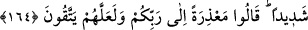

şekilde peygamberlere muhalefetlerini ikrara zorlaması ve bu yolla onları kınamasıdır.
Yine böylece Peygamberimiz kendisinin bilmediklerini ta‘lim veya vahiy yoluyla
öğrenen hak bir peygamber olduğunu gösteren bir mucize göstermiştir. Çünkü ümmî
olduğu ve önceki kitabların ehliyle beraber yaşamadığı halde bu kıssayı, eksiksiz ve
fazlasız bir şekilde dosdoğru olarak anlatması, bunun vahiyle öğrenilmiş bir bilgi
olduğunu gösterir. Dolayısıyla Peygamberimiz’in aslına uygun olarak bu kıssayı
açıklaması, O’nun (a.s.) açık mucizelerinden biri olmuştur.
“Hani onlar Cumartesi gününe saygısızlık edip haddi aşıyorlardı.” Eyle halkı,
Cumartesi günü balık avlayarak Allah’ın koyduğu sınırları aşıyorlardı. Halbuki o gün
onların ibadetten başka bir işle meşgul olmaları yasaklanmıştı. “Çünkü Cumartesi
(tatili) yaptıkları gün balıkları onlara akın akın gelirdi.” Onlar, cumartesi tatili yapıp
yasağa riayet ettikleri gün balıklar onlara, su üstüne çıkarak sâhilin yakınına gelirdi.
“Cumartesi (tatili) yapmadıkları gün” yani Cumartesi olmayan günlerde veya
Cumartesi gününe saygı göstermedikleri zamanlarda “balıkları” onların avlamasından
korkarak önceki gibi “gelmezdi”. Çünkü Allah Teâlâ, o zamanın peygamberi için bir
mucize ve Cumartesi gününü diğer günlerden ayıran kimseler için de bir imtihan olmak
üzere balıkların Cumartesi günü akın akın gelme sebeplerini kuvvetlendirmişti.
“Biz onları” yaptıkları ve terk ettikleri her işte sürekli olarak “yoldan
çıkmalarından ötürü böyle” hayret verici ve şiddetli bir şekilde “sınıyorduk.”
Düşmanlıklarını ortaya çıkarıp böylece onları cezalandırmak için, kendilerini imtihan
eden birisinin yapacağı muameleyi yapıyorduk.
“
”, balık anlamına gelen “
” kelimesinin çoğuludur. “
” ve “
” da lafız
ve mânâ olarak bunun gibidir. Hz. Ali (r.a.) “balıklar” anlamında “nînân” kelimesini
kullanarak şöyle derdi: “Büyük ve engin denizlerdeki balıkların çeşitlerini, ayrı ayrı
özelliklerini bilen Allah, bütün noksan sıfatlardan münezzehtir.”
Balıkların, o kent halkına izafe edilerek “balıkları” denmesi, o bölgedeki balıklar
kastedildiği içindir.
164. İçlerinden bir topluluk: “Allah’ın helâk edeceği yahut şiddetli bir şekilde
azap edeceği bir kavme ne diye öğüt veriyorsunuz?” dedi. (Öğüt verenler) dediler
ki: Rabbinize mazeret beyan edelim diye, bir de sakınırlar ümidiyle (öğüt
veriyoruz).
“İçlerinden bir topluluk” yani, onlara öğüt verme hususunda bütün zorluk ve
güçlüklere göğüs geren, sonunda onların bu öğüdü kabul etmelerinden tamamen ümidini
kesen Eyle halkının salihlerinden bir topluluk; yine salihlerinden olan, fakat öğüt
vermenin fayda vereceğine ve Rab’lerine karşı özürde daha iyi olacağına inanarak